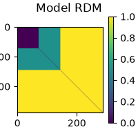
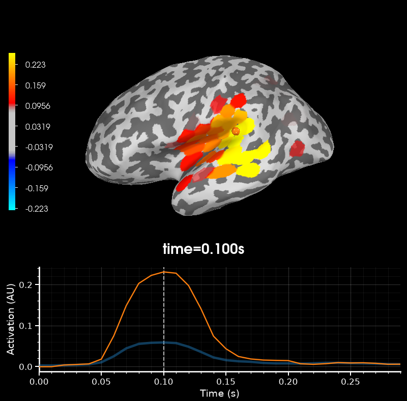
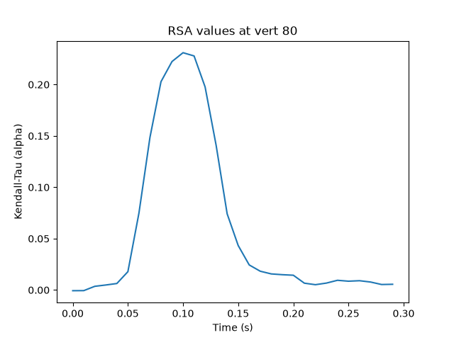

Note
Go to the end to download the full example code.
Source-level RSA using a searchlight on surface data#
This example demonstrates how to perform representational similarity analysis (RSA) on source localized MEG data, using a searchlight approach.
In the searchlight approach, representational similarity is computed between the model and searchlight “patches”. A patch is defined by a seed vertex on the cortex and all vertices within a given radius. By default, patches are created using each vertex as a seed point, so you can think of it as a “searchlight” that scans along the cortex.
The radius of a searchlight can be defined in space, in time, or both. In this example, our searchlight will have a spatial radius of 2 cm. and a temporal radius of 20 ms.
The dataset will be the MNE-sample dataset: a collection of 288 epochs in which the participant was presented with an auditory beep or visual stimulus to either the left or right ear or visual field.
# sphinx_gallery_thumbnail_number=2
import mne
import mne_rsa
# Import required packages
from matplotlib import pyplot as plt
mne.set_log_level(False) # Be less verbose
mne.viz.set_3d_backend("pyvista")
'pyvistaqt'
We’ll be using the data from the MNE-sample set. To speed up computations in this example, we’re going to use one of the sparse source spaces from the testing set.
sample_root = mne.datasets.sample.data_path(verbose=True)
testing_root = mne.datasets.testing.data_path(verbose=True)
sample_path = sample_root / "MEG" / "sample"
testing_path = testing_root / "MEG" / "sample"
subjects_dir = sample_root / "subjects"
Creating epochs from the continuous (raw) data. We downsample to 100 Hz to speed up the RSA computations later on.
raw = mne.io.read_raw_fif(sample_path / "sample_audvis_filt-0-40_raw.fif")
events = mne.read_events(sample_path / "sample_audvis_filt-0-40_raw-eve.fif")
event_id = {"audio/left": 1, "audio/right": 2, "visual/left": 3, "visual/right": 4}
epochs = mne.Epochs(raw, events, event_id, preload=True)
epochs.resample(100)
It’s important that the model RDM and the epochs are in the same order, so that each row in the model RDM will correspond to an epoch. The model RDM will be easier to interpret visually if the data is ordered such that all epochs belonging to the same experimental condition are right next to each-other, so patterns jump out. This can be achieved by first splitting the epochs by experimental condition and then concatenating them together again.
epoch_splits = [
epochs[cl] for cl in ["audio/left", "audio/right", "visual/left", "visual/right"]
]
epochs = mne.concatenate_epochs(epoch_splits)
Now that the epochs are in the proper order, we can create a RDM based on the experimental conditions. This type of RDM is referred to as a “sensitivity RDM”. Let’s create a sensitivity RDM that will pick up the left auditory response when RSA-ed against the MEG data. Since we want to capture areas where left beeps generate a large signal, we specify that left beeps should be similar to other left beeps. Since we do not want areas where visual stimuli generate a large signal, we specify that beeps must be different from visual stimuli. Furthermore, since in areas where visual stimuli generate only a small signal, random noise will dominate, we also specify that visual stimuli are different from other visual stimuli. Finally left and right auditory beeps will be somewhat similar.
def sensitivity_metric(event_id_1, event_id_2):
"""Determine similarity between two epochs, given their event ids."""
if event_id_1 == 1 and event_id_2 == 1:
return 0 # Completely similar
if event_id_1 == 2 and event_id_2 == 2:
return 0.5 # Somewhat similar
elif event_id_1 == 1 and event_id_2 == 2:
return 0.5 # Somewhat similar
elif event_id_1 == 2 and event_id_1 == 1:
return 0.5 # Somewhat similar
else:
return 1 # Not similar at all
model_rdm = mne_rsa.compute_rdm(epochs.events[:, 2], metric=sensitivity_metric)
mne_rsa.plot_rdms(model_rdm, title="Model RDM")

<Figure size 200x200 with 2 Axes>
This example is going to be on source-level, so let’s load the inverse operator and apply it to obtain a cortical surface source estimate for each epoch. To speed up the computation, we going to load an inverse operator from the testing dataset that was created using a sparse source space with not too many vertices.
inv = mne.minimum_norm.read_inverse_operator(
testing_path / "sample_audvis_trunc-meg-eeg-oct-4-meg-inv.fif"
)
Especially when creating source estimates for single epochs, it is important to think
what source orientations to use. Setting pick_ori="vector" is a solid choice,
which means using all three XYZ components of the estimated source activity, and so is
pick_ori="normal" which means using the source ortientation orthogonal to the
cortex. See the
https://mne.tools/stable/auto_tutorials/inverse/35_dipole_orientations.html for more details.
epochs_stc = mne.minimum_norm.apply_inverse_epochs(
epochs, inv, lambda2=0.1111, pick_ori="vector"
)
Performing the RSA. This will take some time. Consider increasing n_jobs to
parallelize the computation across multiple CPUs.
rsa_vals = mne_rsa.rsa_stcs(
epochs_stc, # The source localized epochs
model_rdm, # The model RDM we constructed above
src=inv["src"], # The inverse operator has our source space
stc_rdm_metric="correlation", # Metric to compute the MEG RDMs
rsa_metric="kendall-tau-a", # Metric to compare model and EEG RDMs
spatial_radius=0.02, # Spatial radius of the searchlight patch
temporal_radius=0.02, # Temporal radius of the searchlight path
tmin=0,
tmax=0.3, # To save time, only analyze this time interval
n_jobs=1, # Only use one CPU core. Increase this for more speed.
verbose=True,
) # Set to True to display a progress bar
# Find the searchlight patch with highest RSA score
peak_vertex, peak_time = rsa_vals.get_peak(vert_as_index=True)
# Plot the result at the timepoint where the maximum RSA value occurs.
rsa_vals.plot("sample", subjects_dir=subjects_dir, initial_time=peak_time)

Calculating source space distances (limit=20.0 mm)...
Not adding patch information, dist_limit too small
Performing RSA between SourceEstimates and 1 model RDM(s)
Spatial radius: 0.02 meters
Using 498 vertices
Temporal radius: 2 samples
Time interval: 0-0.3 seconds
Number of searchlight patches: 14940
0%| | 0/14940 [00:00<?, ?patch/s]Creating spatio-temporal searchlight patches
0%| | 23/14940 [00:00<01:07, 221.11patch/s]
0%| | 46/14940 [00:00<01:06, 224.54patch/s]
0%| | 69/14940 [00:00<01:05, 226.09patch/s]
1%| | 92/14940 [00:00<01:05, 227.03patch/s]
1%| | 115/14940 [00:00<01:06, 222.30patch/s]
1%| | 138/14940 [00:00<01:07, 219.92patch/s]
1%| | 161/14940 [00:00<01:07, 218.02patch/s]
1%| | 183/14940 [00:00<01:08, 214.56patch/s]
1%|▏ | 205/14940 [00:00<01:08, 214.49patch/s]
2%|▏ | 227/14940 [00:01<01:08, 213.87patch/s]
2%|▏ | 249/14940 [00:01<01:08, 213.12patch/s]
2%|▏ | 271/14940 [00:01<01:09, 212.04patch/s]
2%|▏ | 293/14940 [00:01<01:09, 209.93patch/s]
2%|▏ | 314/14940 [00:01<01:09, 209.52patch/s]
2%|▏ | 335/14940 [00:01<01:09, 209.59patch/s]
2%|▏ | 357/14940 [00:01<01:09, 210.82patch/s]
3%|▎ | 379/14940 [00:01<01:09, 208.78patch/s]
3%|▎ | 400/14940 [00:01<01:10, 207.45patch/s]
3%|▎ | 421/14940 [00:01<01:09, 207.50patch/s]
3%|▎ | 443/14940 [00:02<01:09, 209.76patch/s]
3%|▎ | 465/14940 [00:02<01:08, 210.87patch/s]
3%|▎ | 487/14940 [00:02<01:08, 211.31patch/s]
3%|▎ | 509/14940 [00:02<01:07, 212.54patch/s]
4%|▎ | 531/14940 [00:02<01:08, 210.96patch/s]
4%|▎ | 553/14940 [00:02<01:08, 209.58patch/s]
4%|▍ | 574/14940 [00:02<01:08, 208.45patch/s]
4%|▍ | 595/14940 [00:02<01:08, 208.03patch/s]
4%|▍ | 616/14940 [00:02<01:09, 207.49patch/s]
4%|▍ | 637/14940 [00:03<01:09, 207.00patch/s]
4%|▍ | 658/14940 [00:03<01:08, 207.08patch/s]
5%|▍ | 679/14940 [00:03<01:08, 206.89patch/s]
5%|▍ | 700/14940 [00:03<01:08, 206.88patch/s]
5%|▍ | 721/14940 [00:03<01:08, 207.08patch/s]
5%|▍ | 743/14940 [00:03<01:07, 209.43patch/s]
5%|▌ | 764/14940 [00:03<01:07, 209.28patch/s]
5%|▌ | 785/14940 [00:03<01:07, 208.18patch/s]
5%|▌ | 806/14940 [00:03<01:08, 206.58patch/s]
6%|▌ | 827/14940 [00:03<01:08, 206.45patch/s]
6%|▌ | 848/14940 [00:04<01:08, 206.30patch/s]
6%|▌ | 869/14940 [00:04<01:08, 206.39patch/s]
6%|▌ | 890/14940 [00:04<01:08, 204.24patch/s]
6%|▌ | 911/14940 [00:04<01:09, 203.19patch/s]
6%|▌ | 932/14940 [00:04<01:08, 203.25patch/s]
6%|▋ | 954/14940 [00:04<01:07, 206.88patch/s]
7%|▋ | 975/14940 [00:04<01:07, 205.43patch/s]
7%|▋ | 996/14940 [00:04<01:07, 205.46patch/s]
7%|▋ | 1018/14940 [00:04<01:06, 208.34patch/s]
7%|▋ | 1039/14940 [00:04<01:07, 206.87patch/s]
7%|▋ | 1060/14940 [00:05<01:07, 206.59patch/s]
7%|▋ | 1082/14940 [00:05<01:06, 207.68patch/s]
7%|▋ | 1104/14940 [00:05<01:06, 209.41patch/s]
8%|▊ | 1126/14940 [00:05<01:05, 209.80patch/s]
8%|▊ | 1148/14940 [00:05<01:05, 210.17patch/s]
8%|▊ | 1170/14940 [00:05<01:05, 211.35patch/s]
8%|▊ | 1192/14940 [00:05<01:04, 212.00patch/s]
8%|▊ | 1214/14940 [00:05<01:04, 212.76patch/s]
8%|▊ | 1236/14940 [00:05<01:04, 212.50patch/s]
8%|▊ | 1258/14940 [00:05<01:04, 210.61patch/s]
9%|▊ | 1280/14940 [00:06<01:05, 209.32patch/s]
9%|▊ | 1301/14940 [00:06<01:05, 208.33patch/s]
9%|▉ | 1322/14940 [00:06<01:05, 207.64patch/s]
9%|▉ | 1343/14940 [00:06<01:05, 207.31patch/s]
9%|▉ | 1364/14940 [00:06<01:05, 207.67patch/s]
9%|▉ | 1385/14940 [00:06<01:05, 207.78patch/s]
9%|▉ | 1406/14940 [00:06<01:05, 207.41patch/s]
10%|▉ | 1427/14940 [00:06<01:05, 206.30patch/s]
10%|▉ | 1448/14940 [00:06<01:05, 204.66patch/s]
10%|▉ | 1469/14940 [00:07<01:06, 203.29patch/s]
10%|▉ | 1491/14940 [00:07<01:05, 206.25patch/s]
10%|█ | 1512/14940 [00:07<01:04, 207.29patch/s]
10%|█ | 1533/14940 [00:07<01:04, 207.19patch/s]
10%|█ | 1555/14940 [00:07<01:04, 209.12patch/s]
11%|█ | 1576/14940 [00:07<01:04, 206.75patch/s]
11%|█ | 1597/14940 [00:07<01:04, 205.59patch/s]
11%|█ | 1618/14940 [00:07<01:04, 206.84patch/s]
11%|█ | 1639/14940 [00:07<01:05, 204.53patch/s]
11%|█ | 1660/14940 [00:07<01:04, 204.34patch/s]
11%|█▏ | 1681/14940 [00:08<01:04, 205.67patch/s]
11%|█▏ | 1702/14940 [00:08<01:05, 202.79patch/s]
12%|█▏ | 1723/14940 [00:08<01:04, 203.41patch/s]
12%|█▏ | 1744/14940 [00:08<01:04, 205.28patch/s]
12%|█▏ | 1766/14940 [00:08<01:03, 207.78patch/s]
12%|█▏ | 1787/14940 [00:08<01:04, 205.06patch/s]
12%|█▏ | 1808/14940 [00:08<01:05, 201.73patch/s]
12%|█▏ | 1829/14940 [00:08<01:05, 198.97patch/s]
12%|█▏ | 1850/14940 [00:08<01:05, 201.00patch/s]
13%|█▎ | 1871/14940 [00:08<01:04, 203.52patch/s]
13%|█▎ | 1893/14940 [00:09<01:03, 206.28patch/s]
13%|█▎ | 1914/14940 [00:09<01:03, 206.31patch/s]
13%|█▎ | 1935/14940 [00:09<01:03, 206.32patch/s]
13%|█▎ | 1956/14940 [00:09<01:02, 206.93patch/s]
13%|█▎ | 1978/14940 [00:09<01:01, 209.19patch/s]
13%|█▎ | 1999/14940 [00:09<01:02, 208.34patch/s]
14%|█▎ | 2020/14940 [00:09<01:02, 207.52patch/s]
14%|█▎ | 2041/14940 [00:09<01:02, 206.44patch/s]
14%|█▍ | 2062/14940 [00:09<01:02, 206.05patch/s]
14%|█▍ | 2083/14940 [00:09<01:02, 206.63patch/s]
14%|█▍ | 2104/14940 [00:10<01:02, 206.94patch/s]
14%|█▍ | 2126/14940 [00:10<01:01, 208.14patch/s]
14%|█▍ | 2147/14940 [00:10<01:01, 207.70patch/s]
15%|█▍ | 2168/14940 [00:10<01:02, 205.24patch/s]
15%|█▍ | 2189/14940 [00:10<01:03, 201.45patch/s]
15%|█▍ | 2211/14940 [00:10<01:02, 204.86patch/s]
15%|█▍ | 2232/14940 [00:10<01:02, 204.33patch/s]
15%|█▌ | 2253/14940 [00:10<01:02, 202.01patch/s]
15%|█▌ | 2275/14940 [00:10<01:01, 204.64patch/s]
15%|█▌ | 2296/14940 [00:11<01:02, 202.06patch/s]
16%|█▌ | 2317/14940 [00:11<01:02, 200.57patch/s]
16%|█▌ | 2338/14940 [00:11<01:02, 202.36patch/s]
16%|█▌ | 2359/14940 [00:11<01:02, 202.22patch/s]
16%|█▌ | 2380/14940 [00:11<01:02, 200.84patch/s]
16%|█▌ | 2401/14940 [00:11<01:02, 199.16patch/s]
16%|█▌ | 2421/14940 [00:11<01:03, 197.50patch/s]
16%|█▋ | 2442/14940 [00:11<01:02, 199.09patch/s]
16%|█▋ | 2463/14940 [00:11<01:01, 202.06patch/s]
17%|█▋ | 2484/14940 [00:11<01:01, 203.68patch/s]
17%|█▋ | 2505/14940 [00:12<01:01, 201.08patch/s]
17%|█▋ | 2526/14940 [00:12<01:02, 199.69patch/s]
17%|█▋ | 2547/14940 [00:12<01:01, 202.56patch/s]
17%|█▋ | 2568/14940 [00:12<01:00, 204.55patch/s]
17%|█▋ | 2589/14940 [00:12<01:00, 204.67patch/s]
17%|█▋ | 2610/14940 [00:12<01:00, 203.31patch/s]
18%|█▊ | 2631/14940 [00:12<01:00, 204.21patch/s]
18%|█▊ | 2652/14940 [00:12<00:59, 205.42patch/s]
18%|█▊ | 2673/14940 [00:12<00:59, 206.46patch/s]
18%|█▊ | 2694/14940 [00:13<00:59, 206.44patch/s]
18%|█▊ | 2715/14940 [00:13<00:59, 206.34patch/s]
18%|█▊ | 2736/14940 [00:13<00:59, 205.08patch/s]
18%|█▊ | 2757/14940 [00:13<01:00, 202.32patch/s]
19%|█▊ | 2778/14940 [00:13<01:00, 200.30patch/s]
19%|█▊ | 2799/14940 [00:13<01:00, 199.44patch/s]
19%|█▉ | 2820/14940 [00:13<01:00, 199.69patch/s]
19%|█▉ | 2840/14940 [00:13<01:00, 198.45patch/s]
19%|█▉ | 2860/14940 [00:13<01:00, 198.67patch/s]
19%|█▉ | 2881/14940 [00:13<01:00, 199.19patch/s]
19%|█▉ | 2902/14940 [00:14<01:00, 200.15patch/s]
20%|█▉ | 2923/14940 [00:14<00:59, 200.93patch/s]
20%|█▉ | 2944/14940 [00:14<00:59, 200.99patch/s]
20%|█▉ | 2965/14940 [00:14<01:00, 199.53patch/s]
20%|█▉ | 2986/14940 [00:14<00:59, 200.74patch/s]
20%|██ | 3007/14940 [00:14<00:59, 201.77patch/s]
20%|██ | 3028/14940 [00:14<00:59, 201.28patch/s]
20%|██ | 3049/14940 [00:14<00:58, 201.72patch/s]
21%|██ | 3070/14940 [00:14<00:58, 202.40patch/s]
21%|██ | 3091/14940 [00:14<00:58, 203.76patch/s]
21%|██ | 3112/14940 [00:15<00:57, 205.53patch/s]
21%|██ | 3133/14940 [00:15<00:58, 203.36patch/s]
21%|██ | 3154/14940 [00:15<00:58, 200.80patch/s]
21%|██▏ | 3175/14940 [00:15<00:58, 202.61patch/s]
21%|██▏ | 3196/14940 [00:15<00:58, 200.52patch/s]
22%|██▏ | 3217/14940 [00:15<00:58, 198.85patch/s]
22%|██▏ | 3238/14940 [00:15<00:58, 199.34patch/s]
22%|██▏ | 3259/14940 [00:15<00:58, 201.10patch/s]
22%|██▏ | 3280/14940 [00:15<00:57, 202.81patch/s]
22%|██▏ | 3301/14940 [00:16<00:57, 203.87patch/s]
22%|██▏ | 3322/14940 [00:16<00:57, 201.23patch/s]
22%|██▏ | 3343/14940 [00:16<00:57, 201.48patch/s]
23%|██▎ | 3364/14940 [00:16<00:57, 202.98patch/s]
23%|██▎ | 3385/14940 [00:16<00:56, 204.32patch/s]
23%|██▎ | 3406/14940 [00:16<00:56, 204.93patch/s]
23%|██▎ | 3427/14940 [00:16<00:56, 205.12patch/s]
23%|██▎ | 3448/14940 [00:16<00:55, 205.68patch/s]
23%|██▎ | 3469/14940 [00:16<00:55, 204.86patch/s]
23%|██▎ | 3490/14940 [00:16<00:55, 204.80patch/s]
24%|██▎ | 3511/14940 [00:17<00:55, 205.41patch/s]
24%|██▎ | 3532/14940 [00:17<00:55, 206.00patch/s]
24%|██▍ | 3553/14940 [00:17<00:55, 205.42patch/s]
24%|██▍ | 3574/14940 [00:17<00:55, 204.84patch/s]
24%|██▍ | 3595/14940 [00:17<00:55, 205.64patch/s]
24%|██▍ | 3616/14940 [00:17<00:54, 206.04patch/s]
24%|██▍ | 3637/14940 [00:17<00:55, 204.68patch/s]
24%|██▍ | 3658/14940 [00:17<00:56, 200.92patch/s]
25%|██▍ | 3679/14940 [00:17<00:55, 201.96patch/s]
25%|██▍ | 3700/14940 [00:17<00:55, 200.85patch/s]
25%|██▍ | 3721/14940 [00:18<00:56, 198.37patch/s]
25%|██▌ | 3741/14940 [00:18<00:56, 197.30patch/s]
25%|██▌ | 3762/14940 [00:18<00:56, 198.37patch/s]
25%|██▌ | 3783/14940 [00:18<00:55, 200.30patch/s]
25%|██▌ | 3804/14940 [00:18<00:55, 201.13patch/s]
26%|██▌ | 3825/14940 [00:18<00:55, 201.02patch/s]
26%|██▌ | 3846/14940 [00:18<00:55, 200.61patch/s]
26%|██▌ | 3867/14940 [00:18<00:54, 201.33patch/s]
26%|██▌ | 3888/14940 [00:18<00:55, 199.99patch/s]
26%|██▌ | 3909/14940 [00:19<00:55, 198.47patch/s]
26%|██▋ | 3929/14940 [00:19<00:55, 196.76patch/s]
26%|██▋ | 3949/14940 [00:19<00:56, 196.26patch/s]
27%|██▋ | 3969/14940 [00:19<00:55, 196.41patch/s]
27%|██▋ | 3990/14940 [00:19<00:55, 197.58patch/s]
27%|██▋ | 4011/14940 [00:19<00:54, 200.09patch/s]
27%|██▋ | 4032/14940 [00:19<00:54, 201.96patch/s]
27%|██▋ | 4053/14940 [00:19<00:53, 203.37patch/s]
27%|██▋ | 4074/14940 [00:19<00:53, 204.51patch/s]
27%|██▋ | 4095/14940 [00:19<00:52, 205.00patch/s]
28%|██▊ | 4116/14940 [00:20<00:52, 205.35patch/s]
28%|██▊ | 4137/14940 [00:20<00:52, 205.80patch/s]
28%|██▊ | 4158/14940 [00:20<00:52, 203.80patch/s]
28%|██▊ | 4179/14940 [00:20<00:53, 202.98patch/s]
28%|██▊ | 4200/14940 [00:20<00:52, 203.13patch/s]
28%|██▊ | 4221/14940 [00:20<00:52, 203.86patch/s]
28%|██▊ | 4242/14940 [00:20<00:52, 204.17patch/s]
29%|██▊ | 4263/14940 [00:20<00:52, 203.11patch/s]
29%|██▊ | 4284/14940 [00:20<00:53, 200.20patch/s]
29%|██▉ | 4305/14940 [00:20<00:52, 201.58patch/s]
29%|██▉ | 4326/14940 [00:21<00:52, 202.79patch/s]
29%|██▉ | 4347/14940 [00:21<00:52, 200.89patch/s]
29%|██▉ | 4368/14940 [00:21<00:53, 199.05patch/s]
29%|██▉ | 4389/14940 [00:21<00:52, 199.83patch/s]
30%|██▉ | 4410/14940 [00:21<00:51, 202.51patch/s]
30%|██▉ | 4431/14940 [00:21<00:51, 203.64patch/s]
30%|██▉ | 4452/14940 [00:21<00:51, 204.24patch/s]
30%|██▉ | 4473/14940 [00:21<00:51, 205.08patch/s]
30%|███ | 4494/14940 [00:21<00:50, 205.52patch/s]
30%|███ | 4515/14940 [00:22<00:50, 206.44patch/s]
30%|███ | 4536/14940 [00:22<00:50, 205.51patch/s]
31%|███ | 4557/14940 [00:22<00:51, 201.53patch/s]
31%|███ | 4578/14940 [00:22<00:51, 201.57patch/s]
31%|███ | 4599/14940 [00:22<00:51, 202.04patch/s]
31%|███ | 4620/14940 [00:22<00:50, 202.36patch/s]
31%|███ | 4641/14940 [00:22<00:50, 203.19patch/s]
31%|███ | 4662/14940 [00:22<00:50, 203.99patch/s]
31%|███▏ | 4683/14940 [00:22<00:50, 204.34patch/s]
31%|███▏ | 4704/14940 [00:22<00:50, 202.83patch/s]
32%|███▏ | 4725/14940 [00:23<00:50, 200.71patch/s]
32%|███▏ | 4746/14940 [00:23<00:51, 199.81patch/s]
32%|███▏ | 4767/14940 [00:23<00:50, 201.65patch/s]
32%|███▏ | 4788/14940 [00:23<00:49, 203.85patch/s]
32%|███▏ | 4809/14940 [00:23<00:49, 205.09patch/s]
32%|███▏ | 4830/14940 [00:23<00:49, 205.59patch/s]
32%|███▏ | 4851/14940 [00:23<00:49, 202.59patch/s]
33%|███▎ | 4872/14940 [00:23<00:49, 203.50patch/s]
33%|███▎ | 4894/14940 [00:23<00:48, 206.61patch/s]
33%|███▎ | 4915/14940 [00:23<00:48, 207.51patch/s]
33%|███▎ | 4936/14940 [00:24<00:48, 207.24patch/s]
33%|███▎ | 4957/14940 [00:24<00:48, 206.74patch/s]
33%|███▎ | 4978/14940 [00:24<00:48, 206.55patch/s]
33%|███▎ | 4999/14940 [00:24<00:48, 206.51patch/s]
34%|███▎ | 5020/14940 [00:24<00:47, 207.11patch/s]
34%|███▎ | 5042/14940 [00:24<00:47, 208.03patch/s]
34%|███▍ | 5063/14940 [00:24<00:47, 208.36patch/s]
34%|███▍ | 5085/14940 [00:24<00:47, 208.95patch/s]
34%|███▍ | 5106/14940 [00:24<00:47, 208.30patch/s]
34%|███▍ | 5127/14940 [00:25<00:47, 205.59patch/s]
34%|███▍ | 5149/14940 [00:25<00:47, 207.31patch/s]
35%|███▍ | 5170/14940 [00:25<00:47, 207.10patch/s]
35%|███▍ | 5191/14940 [00:25<00:47, 204.66patch/s]
35%|███▍ | 5212/14940 [00:25<00:47, 205.25patch/s]
35%|███▌ | 5233/14940 [00:25<00:47, 205.60patch/s]
35%|███▌ | 5254/14940 [00:25<00:47, 206.06patch/s]
35%|███▌ | 5275/14940 [00:25<00:46, 206.42patch/s]
35%|███▌ | 5296/14940 [00:25<00:46, 207.22patch/s]
36%|███▌ | 5317/14940 [00:25<00:46, 206.69patch/s]
36%|███▌ | 5338/14940 [00:26<00:46, 204.51patch/s]
36%|███▌ | 5359/14940 [00:26<00:46, 205.73patch/s]
36%|███▌ | 5381/14940 [00:26<00:46, 207.30patch/s]
36%|███▌ | 5403/14940 [00:26<00:45, 208.53patch/s]
36%|███▋ | 5424/14940 [00:26<00:45, 207.70patch/s]
36%|███▋ | 5445/14940 [00:26<00:45, 207.85patch/s]
37%|███▋ | 5466/14940 [00:26<00:45, 208.24patch/s]
37%|███▋ | 5487/14940 [00:26<00:45, 207.86patch/s]
37%|███▋ | 5508/14940 [00:26<00:45, 206.20patch/s]
37%|███▋ | 5529/14940 [00:26<00:45, 206.44patch/s]
37%|███▋ | 5551/14940 [00:27<00:45, 208.29patch/s]
37%|███▋ | 5572/14940 [00:27<00:45, 207.54patch/s]
37%|███▋ | 5593/14940 [00:27<00:45, 207.66patch/s]
38%|███▊ | 5615/14940 [00:27<00:44, 208.55patch/s]
38%|███▊ | 5637/14940 [00:27<00:44, 209.97patch/s]
38%|███▊ | 5658/14940 [00:27<00:44, 207.94patch/s]
38%|███▊ | 5679/14940 [00:27<00:44, 205.98patch/s]
38%|███▊ | 5700/14940 [00:27<00:45, 204.85patch/s]
38%|███▊ | 5722/14940 [00:27<00:44, 207.42patch/s]
38%|███▊ | 5744/14940 [00:27<00:44, 208.23patch/s]
39%|███▊ | 5766/14940 [00:28<00:43, 208.89patch/s]
39%|███▊ | 5788/14940 [00:28<00:43, 210.21patch/s]
39%|███▉ | 5810/14940 [00:28<00:43, 209.33patch/s]
39%|███▉ | 5831/14940 [00:28<00:43, 209.24patch/s]
39%|███▉ | 5853/14940 [00:28<00:43, 209.57patch/s]
39%|███▉ | 5874/14940 [00:28<00:43, 209.64patch/s]
39%|███▉ | 5895/14940 [00:28<00:43, 208.27patch/s]
40%|███▉ | 5916/14940 [00:28<00:43, 206.74patch/s]
40%|███▉ | 5937/14940 [00:28<00:43, 206.88patch/s]
40%|███▉ | 5958/14940 [00:29<00:43, 206.42patch/s]
40%|████ | 5979/14940 [00:29<00:43, 205.58patch/s]
40%|████ | 6000/14940 [00:29<00:43, 204.62patch/s]
40%|████ | 6021/14940 [00:29<00:43, 203.74patch/s]
40%|████ | 6042/14940 [00:29<00:43, 204.12patch/s]
41%|████ | 6063/14940 [00:29<00:43, 204.95patch/s]
41%|████ | 6085/14940 [00:29<00:42, 206.62patch/s]
41%|████ | 6106/14940 [00:29<00:42, 207.51patch/s]
41%|████ | 6128/14940 [00:29<00:42, 208.66patch/s]
41%|████ | 6150/14940 [00:29<00:41, 210.28patch/s]
41%|████▏ | 6172/14940 [00:30<00:41, 209.28patch/s]
41%|████▏ | 6193/14940 [00:30<00:41, 209.16patch/s]
42%|████▏ | 6214/14940 [00:30<00:41, 208.98patch/s]
42%|████▏ | 6235/14940 [00:30<00:42, 207.21patch/s]
42%|████▏ | 6256/14940 [00:30<00:41, 207.40patch/s]
42%|████▏ | 6277/14940 [00:30<00:41, 207.61patch/s]
42%|████▏ | 6298/14940 [00:30<00:41, 206.17patch/s]
42%|████▏ | 6319/14940 [00:30<00:41, 207.27patch/s]
42%|████▏ | 6340/14940 [00:30<00:41, 207.61patch/s]
43%|████▎ | 6361/14940 [00:30<00:41, 207.46patch/s]
43%|████▎ | 6382/14940 [00:31<00:41, 208.05patch/s]
43%|████▎ | 6404/14940 [00:31<00:40, 209.26patch/s]
43%|████▎ | 6425/14940 [00:31<00:40, 209.47patch/s]
43%|████▎ | 6446/14940 [00:31<00:40, 207.41patch/s]
43%|████▎ | 6468/14940 [00:31<00:40, 208.78patch/s]
43%|████▎ | 6490/14940 [00:31<00:40, 210.25patch/s]
44%|████▎ | 6512/14940 [00:31<00:39, 211.36patch/s]
44%|████▎ | 6534/14940 [00:31<00:39, 210.89patch/s]
44%|████▍ | 6556/14940 [00:31<00:39, 209.69patch/s]
44%|████▍ | 6577/14940 [00:31<00:39, 209.57patch/s]
44%|████▍ | 6599/14940 [00:32<00:39, 210.81patch/s]
44%|████▍ | 6621/14940 [00:32<00:39, 208.24patch/s]
44%|████▍ | 6642/14940 [00:32<00:40, 206.58patch/s]
45%|████▍ | 6663/14940 [00:32<00:40, 205.55patch/s]
45%|████▍ | 6684/14940 [00:32<00:40, 205.60patch/s]
45%|████▍ | 6705/14940 [00:32<00:39, 206.41patch/s]
45%|████▌ | 6726/14940 [00:32<00:39, 207.33patch/s]
45%|████▌ | 6748/14940 [00:32<00:39, 208.25patch/s]
45%|████▌ | 6769/14940 [00:32<00:39, 208.59patch/s]
45%|████▌ | 6791/14940 [00:33<00:38, 209.06patch/s]
46%|████▌ | 6813/14940 [00:33<00:38, 209.48patch/s]
46%|████▌ | 6835/14940 [00:33<00:38, 210.81patch/s]
46%|████▌ | 6857/14940 [00:33<00:38, 210.63patch/s]
46%|████▌ | 6879/14940 [00:33<00:38, 210.49patch/s]
46%|████▌ | 6901/14940 [00:33<00:38, 210.21patch/s]
46%|████▋ | 6923/14940 [00:33<00:38, 210.28patch/s]
46%|████▋ | 6945/14940 [00:33<00:37, 211.14patch/s]
47%|████▋ | 6967/14940 [00:33<00:37, 211.10patch/s]
47%|████▋ | 6989/14940 [00:33<00:37, 209.61patch/s]
47%|████▋ | 7011/14940 [00:34<00:37, 210.75patch/s]
47%|████▋ | 7033/14940 [00:34<00:37, 210.10patch/s]
47%|████▋ | 7055/14940 [00:34<00:37, 208.61patch/s]
47%|████▋ | 7076/14940 [00:34<00:37, 207.96patch/s]
48%|████▊ | 7098/14940 [00:34<00:37, 209.07patch/s]
48%|████▊ | 7120/14940 [00:34<00:37, 210.44patch/s]
48%|████▊ | 7142/14940 [00:34<00:36, 211.44patch/s]
48%|████▊ | 7164/14940 [00:34<00:36, 211.99patch/s]
48%|████▊ | 7186/14940 [00:34<00:36, 211.66patch/s]
48%|████▊ | 7208/14940 [00:34<00:36, 210.94patch/s]
48%|████▊ | 7230/14940 [00:35<00:36, 210.67patch/s]
49%|████▊ | 7252/14940 [00:35<00:36, 211.44patch/s]
49%|████▊ | 7274/14940 [00:35<00:36, 211.11patch/s]
49%|████▉ | 7296/14940 [00:35<00:36, 210.67patch/s]
49%|████▉ | 7318/14940 [00:35<00:36, 210.50patch/s]
49%|████▉ | 7340/14940 [00:35<00:35, 211.19patch/s]
49%|████▉ | 7362/14940 [00:35<00:35, 211.05patch/s]
49%|████▉ | 7384/14940 [00:35<00:35, 210.72patch/s]
50%|████▉ | 7406/14940 [00:35<00:35, 211.77patch/s]
50%|████▉ | 7428/14940 [00:36<00:35, 210.21patch/s]
50%|████▉ | 7450/14940 [00:36<00:35, 209.90patch/s]
50%|█████ | 7472/14940 [00:36<00:35, 210.78patch/s]
50%|█████ | 7494/14940 [00:36<00:35, 210.45patch/s]
50%|█████ | 7516/14940 [00:36<00:35, 210.97patch/s]
50%|█████ | 7538/14940 [00:36<00:35, 211.30patch/s]
51%|█████ | 7560/14940 [00:36<00:34, 211.17patch/s]
51%|█████ | 7582/14940 [00:36<00:35, 209.75patch/s]
51%|█████ | 7603/14940 [00:36<00:35, 209.16patch/s]
51%|█████ | 7625/14940 [00:36<00:34, 209.67patch/s]
51%|█████ | 7647/14940 [00:37<00:34, 211.05patch/s]
51%|█████▏ | 7669/14940 [00:37<00:34, 212.10patch/s]
51%|█████▏ | 7691/14940 [00:37<00:34, 211.19patch/s]
52%|█████▏ | 7713/14940 [00:37<00:34, 209.75patch/s]
52%|█████▏ | 7734/14940 [00:37<00:34, 208.74patch/s]
52%|█████▏ | 7755/14940 [00:37<00:34, 208.60patch/s]
52%|█████▏ | 7776/14940 [00:37<00:34, 208.61patch/s]
52%|█████▏ | 7797/14940 [00:37<00:34, 207.86patch/s]
52%|█████▏ | 7818/14940 [00:37<00:34, 208.26patch/s]
52%|█████▏ | 7839/14940 [00:38<00:34, 208.12patch/s]
53%|█████▎ | 7860/14940 [00:38<00:34, 207.54patch/s]
53%|█████▎ | 7881/14940 [00:38<00:34, 206.99patch/s]
53%|█████▎ | 7903/14940 [00:38<00:33, 208.06patch/s]
53%|█████▎ | 7925/14940 [00:38<00:33, 209.49patch/s]
53%|█████▎ | 7947/14940 [00:38<00:33, 210.00patch/s]
53%|█████▎ | 7968/14940 [00:38<00:33, 208.14patch/s]
53%|█████▎ | 7989/14940 [00:38<00:33, 206.96patch/s]
54%|█████▎ | 8010/14940 [00:38<00:33, 207.13patch/s]
54%|█████▍ | 8032/14940 [00:38<00:32, 209.42patch/s]
54%|█████▍ | 8054/14940 [00:39<00:32, 209.76patch/s]
54%|█████▍ | 8075/14940 [00:39<00:32, 208.85patch/s]
54%|█████▍ | 8096/14940 [00:39<00:33, 205.95patch/s]
54%|█████▍ | 8117/14940 [00:39<00:33, 205.52patch/s]
54%|█████▍ | 8138/14940 [00:39<00:32, 206.46patch/s]
55%|█████▍ | 8160/14940 [00:39<00:32, 208.86patch/s]
55%|█████▍ | 8181/14940 [00:39<00:32, 207.01patch/s]
55%|█████▍ | 8202/14940 [00:39<00:32, 205.64patch/s]
55%|█████▌ | 8223/14940 [00:39<00:32, 204.89patch/s]
55%|█████▌ | 8244/14940 [00:39<00:32, 205.17patch/s]
55%|█████▌ | 8265/14940 [00:40<00:32, 204.50patch/s]
55%|█████▌ | 8286/14940 [00:40<00:32, 204.78patch/s]
56%|█████▌ | 8308/14940 [00:40<00:32, 207.21patch/s]
56%|█████▌ | 8330/14940 [00:40<00:31, 208.90patch/s]
56%|█████▌ | 8352/14940 [00:40<00:31, 210.20patch/s]
56%|█████▌ | 8374/14940 [00:40<00:31, 211.34patch/s]
56%|█████▌ | 8396/14940 [00:40<00:30, 212.02patch/s]
56%|█████▋ | 8418/14940 [00:40<00:30, 211.37patch/s]
56%|█████▋ | 8440/14940 [00:40<00:30, 210.03patch/s]
57%|█████▋ | 8462/14940 [00:40<00:31, 208.26patch/s]
57%|█████▋ | 8484/14940 [00:41<00:30, 208.99patch/s]
57%|█████▋ | 8506/14940 [00:41<00:30, 209.33patch/s]
57%|█████▋ | 8527/14940 [00:41<00:30, 209.16patch/s]
57%|█████▋ | 8548/14940 [00:41<00:30, 208.23patch/s]
57%|█████▋ | 8569/14940 [00:41<00:30, 207.47patch/s]
57%|█████▋ | 8590/14940 [00:41<00:30, 205.77patch/s]
58%|█████▊ | 8611/14940 [00:41<00:31, 203.91patch/s]
58%|█████▊ | 8632/14940 [00:41<00:30, 204.91patch/s]
58%|█████▊ | 8653/14940 [00:41<00:30, 205.61patch/s]
58%|█████▊ | 8674/14940 [00:42<00:30, 206.53patch/s]
58%|█████▊ | 8696/14940 [00:42<00:29, 208.57patch/s]
58%|█████▊ | 8717/14940 [00:42<00:29, 208.52patch/s]
58%|█████▊ | 8738/14940 [00:42<00:29, 207.36patch/s]
59%|█████▊ | 8759/14940 [00:42<00:29, 206.24patch/s]
59%|█████▉ | 8780/14940 [00:42<00:29, 206.07patch/s]
59%|█████▉ | 8801/14940 [00:42<00:29, 205.86patch/s]
59%|█████▉ | 8822/14940 [00:42<00:29, 206.39patch/s]
59%|█████▉ | 8844/14940 [00:42<00:29, 208.77patch/s]
59%|█████▉ | 8866/14940 [00:42<00:28, 210.11patch/s]
59%|█████▉ | 8888/14940 [00:43<00:28, 209.11patch/s]
60%|█████▉ | 8909/14940 [00:43<00:29, 205.99patch/s]
60%|█████▉ | 8930/14940 [00:43<00:29, 204.72patch/s]
60%|█████▉ | 8951/14940 [00:43<00:29, 205.48patch/s]
60%|██████ | 8973/14940 [00:43<00:28, 207.67patch/s]
60%|██████ | 8994/14940 [00:43<00:28, 208.20patch/s]
60%|██████ | 9015/14940 [00:43<00:28, 208.70patch/s]
60%|██████ | 9036/14940 [00:43<00:28, 209.07patch/s]
61%|██████ | 9058/14940 [00:43<00:27, 210.34patch/s]
61%|██████ | 9080/14940 [00:43<00:27, 209.31patch/s]
61%|██████ | 9101/14940 [00:44<00:27, 209.04patch/s]
61%|██████ | 9123/14940 [00:44<00:27, 209.89patch/s]
61%|██████ | 9145/14940 [00:44<00:27, 211.15patch/s]
61%|██████▏ | 9167/14940 [00:44<00:27, 207.26patch/s]
61%|██████▏ | 9188/14940 [00:44<00:28, 204.76patch/s]
62%|██████▏ | 9209/14940 [00:44<00:27, 205.27patch/s]
62%|██████▏ | 9230/14940 [00:44<00:27, 206.52patch/s]
62%|██████▏ | 9251/14940 [00:44<00:27, 206.97patch/s]
62%|██████▏ | 9272/14940 [00:44<00:27, 206.81patch/s]
62%|██████▏ | 9293/14940 [00:45<00:27, 206.81patch/s]
62%|██████▏ | 9314/14940 [00:45<00:27, 204.90patch/s]
62%|██████▏ | 9335/14940 [00:45<00:27, 204.36patch/s]
63%|██████▎ | 9357/14940 [00:45<00:26, 207.25patch/s]
63%|██████▎ | 9378/14940 [00:45<00:26, 207.21patch/s]
63%|██████▎ | 9399/14940 [00:45<00:26, 206.97patch/s]
63%|██████▎ | 9420/14940 [00:45<00:26, 206.83patch/s]
63%|██████▎ | 9442/14940 [00:45<00:26, 209.12patch/s]
63%|██████▎ | 9463/14940 [00:45<00:26, 208.93patch/s]
63%|██████▎ | 9484/14940 [00:45<00:26, 207.29patch/s]
64%|██████▎ | 9505/14940 [00:46<00:26, 202.66patch/s]
64%|██████▍ | 9526/14940 [00:46<00:26, 203.54patch/s]
64%|██████▍ | 9547/14940 [00:46<00:26, 204.16patch/s]
64%|██████▍ | 9568/14940 [00:46<00:26, 202.56patch/s]
64%|██████▍ | 9589/14940 [00:46<00:26, 203.33patch/s]
64%|██████▍ | 9610/14940 [00:46<00:26, 203.90patch/s]
64%|██████▍ | 9631/14940 [00:46<00:25, 204.70patch/s]
65%|██████▍ | 9652/14940 [00:46<00:25, 206.06patch/s]
65%|██████▍ | 9673/14940 [00:46<00:25, 205.89patch/s]
65%|██████▍ | 9694/14940 [00:46<00:25, 204.33patch/s]
65%|██████▌ | 9715/14940 [00:47<00:26, 200.78patch/s]
65%|██████▌ | 9736/14940 [00:47<00:26, 198.96patch/s]
65%|██████▌ | 9756/14940 [00:47<00:26, 199.15patch/s]
65%|██████▌ | 9778/14940 [00:47<00:25, 202.77patch/s]
66%|██████▌ | 9799/14940 [00:47<00:25, 204.02patch/s]
66%|██████▌ | 9820/14940 [00:47<00:25, 204.14patch/s]
66%|██████▌ | 9841/14940 [00:47<00:24, 204.13patch/s]
66%|██████▌ | 9863/14940 [00:47<00:24, 206.05patch/s]
66%|██████▌ | 9885/14940 [00:47<00:24, 208.19patch/s]
66%|██████▋ | 9907/14940 [00:47<00:23, 209.82patch/s]
66%|██████▋ | 9929/14940 [00:48<00:23, 211.26patch/s]
67%|██████▋ | 9951/14940 [00:48<00:24, 205.89patch/s]
67%|██████▋ | 9972/14940 [00:48<00:24, 204.30patch/s]
67%|██████▋ | 9993/14940 [00:48<00:24, 204.77patch/s]
67%|██████▋ | 10014/14940 [00:48<00:23, 205.61patch/s]
67%|██████▋ | 10035/14940 [00:48<00:23, 206.01patch/s]
67%|██████▋ | 10056/14940 [00:48<00:23, 205.90patch/s]
67%|██████▋ | 10077/14940 [00:48<00:23, 206.01patch/s]
68%|██████▊ | 10098/14940 [00:48<00:23, 202.95patch/s]
68%|██████▊ | 10119/14940 [00:49<00:24, 199.99patch/s]
68%|██████▊ | 10140/14940 [00:49<00:24, 197.68patch/s]
68%|██████▊ | 10161/14940 [00:49<00:23, 200.42patch/s]
68%|██████▊ | 10182/14940 [00:49<00:23, 202.54patch/s]
68%|██████▊ | 10203/14940 [00:49<00:23, 204.60patch/s]
68%|██████▊ | 10224/14940 [00:49<00:22, 205.28patch/s]
69%|██████▊ | 10245/14940 [00:49<00:23, 202.65patch/s]
69%|██████▊ | 10266/14940 [00:49<00:23, 199.68patch/s]
69%|██████▉ | 10286/14940 [00:49<00:23, 197.69patch/s]
69%|██████▉ | 10306/14940 [00:49<00:23, 197.67patch/s]
69%|██████▉ | 10326/14940 [00:50<00:23, 197.86patch/s]
69%|██████▉ | 10346/14940 [00:50<00:23, 197.71patch/s]
69%|██████▉ | 10367/14940 [00:50<00:22, 199.60patch/s]
70%|██████▉ | 10388/14940 [00:50<00:22, 201.31patch/s]
70%|██████▉ | 10409/14940 [00:50<00:22, 201.80patch/s]
70%|██████▉ | 10430/14940 [00:50<00:22, 203.09patch/s]
70%|██████▉ | 10452/14940 [00:50<00:21, 205.28patch/s]
70%|███████ | 10474/14940 [00:50<00:21, 206.45patch/s]
70%|███████ | 10495/14940 [00:50<00:21, 202.35patch/s]
70%|███████ | 10516/14940 [00:51<00:22, 200.23patch/s]
71%|███████ | 10537/14940 [00:51<00:22, 200.10patch/s]
71%|███████ | 10558/14940 [00:51<00:21, 202.42patch/s]
71%|███████ | 10579/14940 [00:51<00:21, 202.27patch/s]
71%|███████ | 10600/14940 [00:51<00:21, 201.49patch/s]
71%|███████ | 10621/14940 [00:51<00:21, 200.06patch/s]
71%|███████ | 10642/14940 [00:51<00:21, 201.25patch/s]
71%|███████▏ | 10663/14940 [00:51<00:21, 200.69patch/s]
72%|███████▏ | 10684/14940 [00:51<00:21, 199.60patch/s]
72%|███████▏ | 10705/14940 [00:51<00:21, 201.24patch/s]
72%|███████▏ | 10726/14940 [00:52<00:21, 199.44patch/s]
72%|███████▏ | 10746/14940 [00:52<00:21, 197.34patch/s]
72%|███████▏ | 10766/14940 [00:52<00:21, 196.12patch/s]
72%|███████▏ | 10786/14940 [00:52<00:21, 194.86patch/s]
72%|███████▏ | 10806/14940 [00:52<00:21, 194.74patch/s]
72%|███████▏ | 10827/14940 [00:52<00:20, 196.73patch/s]
73%|███████▎ | 10848/14940 [00:52<00:20, 199.25patch/s]
73%|███████▎ | 10869/14940 [00:52<00:20, 201.50patch/s]
73%|███████▎ | 10890/14940 [00:52<00:19, 203.22patch/s]
73%|███████▎ | 10911/14940 [00:52<00:19, 204.05patch/s]
73%|███████▎ | 10932/14940 [00:53<00:19, 204.73patch/s]
73%|███████▎ | 10953/14940 [00:53<00:19, 205.50patch/s]
73%|███████▎ | 10974/14940 [00:53<00:19, 205.97patch/s]
74%|███████▎ | 10995/14940 [00:53<00:19, 206.22patch/s]
74%|███████▎ | 11016/14940 [00:53<00:19, 204.90patch/s]
74%|███████▍ | 11037/14940 [00:53<00:19, 201.36patch/s]
74%|███████▍ | 11058/14940 [00:53<00:19, 199.13patch/s]
74%|███████▍ | 11079/14940 [00:53<00:19, 199.84patch/s]
74%|███████▍ | 11101/14940 [00:53<00:18, 203.17patch/s]
74%|███████▍ | 11123/14940 [00:54<00:18, 205.68patch/s]
75%|███████▍ | 11144/14940 [00:54<00:18, 204.59patch/s]
75%|███████▍ | 11165/14940 [00:54<00:18, 203.32patch/s]
75%|███████▍ | 11186/14940 [00:54<00:18, 203.30patch/s]
75%|███████▌ | 11208/14940 [00:54<00:18, 205.66patch/s]
75%|███████▌ | 11230/14940 [00:54<00:17, 207.14patch/s]
75%|███████▌ | 11251/14940 [00:54<00:17, 207.16patch/s]
75%|███████▌ | 11272/14940 [00:54<00:17, 207.10patch/s]
76%|███████▌ | 11293/14940 [00:54<00:17, 206.46patch/s]
76%|███████▌ | 11314/14940 [00:54<00:17, 205.37patch/s]
76%|███████▌ | 11335/14940 [00:55<00:17, 204.68patch/s]
76%|███████▌ | 11356/14940 [00:55<00:17, 205.18patch/s]
76%|███████▌ | 11377/14940 [00:55<00:17, 204.36patch/s]
76%|███████▋ | 11398/14940 [00:55<00:17, 201.85patch/s]
76%|███████▋ | 11419/14940 [00:55<00:17, 202.72patch/s]
77%|███████▋ | 11440/14940 [00:55<00:17, 204.03patch/s]
77%|███████▋ | 11461/14940 [00:55<00:16, 204.80patch/s]
77%|███████▋ | 11482/14940 [00:55<00:17, 203.19patch/s]
77%|███████▋ | 11503/14940 [00:55<00:17, 201.76patch/s]
77%|███████▋ | 11524/14940 [00:55<00:17, 200.43patch/s]
77%|███████▋ | 11545/14940 [00:56<00:17, 197.90patch/s]
77%|███████▋ | 11565/14940 [00:56<00:17, 197.50patch/s]
78%|███████▊ | 11585/14940 [00:56<00:17, 197.22patch/s]
78%|███████▊ | 11605/14940 [00:56<00:16, 196.95patch/s]
78%|███████▊ | 11626/14940 [00:56<00:16, 199.11patch/s]
78%|███████▊ | 11647/14940 [00:56<00:16, 201.43patch/s]
78%|███████▊ | 11668/14940 [00:56<00:16, 203.11patch/s]
78%|███████▊ | 11689/14940 [00:56<00:15, 204.08patch/s]
78%|███████▊ | 11710/14940 [00:56<00:15, 203.07patch/s]
79%|███████▊ | 11731/14940 [00:57<00:15, 201.12patch/s]
79%|███████▊ | 11752/14940 [00:57<00:15, 202.79patch/s]
79%|███████▉ | 11773/14940 [00:57<00:15, 204.09patch/s]
79%|███████▉ | 11794/14940 [00:57<00:15, 205.02patch/s]
79%|███████▉ | 11815/14940 [00:57<00:15, 205.75patch/s]
79%|███████▉ | 11836/14940 [00:57<00:15, 204.13patch/s]
79%|███████▉ | 11857/14940 [00:57<00:15, 203.74patch/s]
80%|███████▉ | 11879/14940 [00:57<00:14, 206.01patch/s]
80%|███████▉ | 11900/14940 [00:57<00:14, 206.53patch/s]
80%|███████▉ | 11921/14940 [00:57<00:14, 206.92patch/s]
80%|███████▉ | 11942/14940 [00:58<00:14, 207.08patch/s]
80%|████████ | 11964/14940 [00:58<00:14, 208.33patch/s]
80%|████████ | 11985/14940 [00:58<00:14, 207.13patch/s]
80%|████████ | 12006/14940 [00:58<00:14, 206.39patch/s]
81%|████████ | 12028/14940 [00:58<00:14, 207.78patch/s]
81%|████████ | 12049/14940 [00:58<00:13, 207.76patch/s]
81%|████████ | 12070/14940 [00:58<00:13, 207.50patch/s]
81%|████████ | 12091/14940 [00:58<00:13, 207.51patch/s]
81%|████████ | 12112/14940 [00:58<00:13, 207.15patch/s]
81%|████████ | 12133/14940 [00:58<00:13, 206.98patch/s]
81%|████████▏ | 12154/14940 [00:59<00:13, 206.17patch/s]
81%|████████▏ | 12175/14940 [00:59<00:13, 203.04patch/s]
82%|████████▏ | 12196/14940 [00:59<00:13, 201.59patch/s]
82%|████████▏ | 12217/14940 [00:59<00:13, 201.74patch/s]
82%|████████▏ | 12238/14940 [00:59<00:13, 203.36patch/s]
82%|████████▏ | 12260/14940 [00:59<00:13, 205.43patch/s]
82%|████████▏ | 12281/14940 [00:59<00:12, 205.65patch/s]
82%|████████▏ | 12302/14940 [00:59<00:12, 205.26patch/s]
82%|████████▏ | 12324/14940 [00:59<00:12, 206.95patch/s]
83%|████████▎ | 12345/14940 [01:00<00:12, 206.62patch/s]
83%|████████▎ | 12366/14940 [01:00<00:12, 205.56patch/s]
83%|████████▎ | 12387/14940 [01:00<00:12, 205.07patch/s]
83%|████████▎ | 12408/14940 [01:00<00:12, 205.35patch/s]
83%|████████▎ | 12429/14940 [01:00<00:12, 204.62patch/s]
83%|████████▎ | 12450/14940 [01:00<00:12, 203.17patch/s]
83%|████████▎ | 12471/14940 [01:00<00:12, 204.18patch/s]
84%|████████▎ | 12492/14940 [01:00<00:11, 204.88patch/s]
84%|████████▍ | 12513/14940 [01:00<00:11, 205.25patch/s]
84%|████████▍ | 12534/14940 [01:00<00:11, 205.84patch/s]
84%|████████▍ | 12555/14940 [01:01<00:11, 204.41patch/s]
84%|████████▍ | 12576/14940 [01:01<00:11, 204.25patch/s]
84%|████████▍ | 12598/14940 [01:01<00:11, 207.11patch/s]
84%|████████▍ | 12620/14940 [01:01<00:11, 208.25patch/s]
85%|████████▍ | 12642/14940 [01:01<00:10, 209.41patch/s]
85%|████████▍ | 12664/14940 [01:01<00:10, 210.56patch/s]
85%|████████▍ | 12686/14940 [01:01<00:10, 210.80patch/s]
85%|████████▌ | 12708/14940 [01:01<00:10, 209.77patch/s]
85%|████████▌ | 12729/14940 [01:01<00:10, 208.04patch/s]
85%|████████▌ | 12750/14940 [01:01<00:10, 206.60patch/s]
85%|████████▌ | 12771/14940 [01:02<00:10, 205.57patch/s]
86%|████████▌ | 12792/14940 [01:02<00:10, 205.26patch/s]
86%|████████▌ | 12813/14940 [01:02<00:10, 205.48patch/s]
86%|████████▌ | 12834/14940 [01:02<00:10, 205.75patch/s]
86%|████████▌ | 12855/14940 [01:02<00:10, 205.48patch/s]
86%|████████▌ | 12876/14940 [01:02<00:10, 205.28patch/s]
86%|████████▋ | 12897/14940 [01:02<00:09, 205.91patch/s]
86%|████████▋ | 12918/14940 [01:02<00:09, 206.18patch/s]
87%|████████▋ | 12939/14940 [01:02<00:09, 205.92patch/s]
87%|████████▋ | 12960/14940 [01:02<00:09, 206.41patch/s]
87%|████████▋ | 12981/14940 [01:03<00:09, 206.56patch/s]
87%|████████▋ | 13002/14940 [01:03<00:09, 207.20patch/s]
87%|████████▋ | 13024/14940 [01:03<00:09, 208.32patch/s]
87%|████████▋ | 13046/14940 [01:03<00:09, 209.91patch/s]
87%|████████▋ | 13068/14940 [01:03<00:08, 210.38patch/s]
88%|████████▊ | 13090/14940 [01:03<00:08, 210.36patch/s]
88%|████████▊ | 13112/14940 [01:03<00:08, 210.47patch/s]
88%|████████▊ | 13134/14940 [01:03<00:08, 210.37patch/s]
88%|████████▊ | 13156/14940 [01:03<00:08, 211.03patch/s]
88%|████████▊ | 13178/14940 [01:04<00:08, 212.09patch/s]
88%|████████▊ | 13200/14940 [01:04<00:08, 212.68patch/s]
89%|████████▊ | 13222/14940 [01:04<00:08, 210.73patch/s]
89%|████████▊ | 13244/14940 [01:04<00:08, 208.03patch/s]
89%|████████▉ | 13265/14940 [01:04<00:08, 204.83patch/s]
89%|████████▉ | 13286/14940 [01:04<00:08, 201.24patch/s]
89%|████████▉ | 13307/14940 [01:04<00:08, 201.37patch/s]
89%|████████▉ | 13328/14940 [01:04<00:07, 202.96patch/s]
89%|████████▉ | 13350/14940 [01:04<00:07, 206.43patch/s]
90%|████████▉ | 13372/14940 [01:04<00:07, 207.53patch/s]
90%|████████▉ | 13393/14940 [01:05<00:07, 207.89patch/s]
90%|████████▉ | 13414/14940 [01:05<00:07, 207.34patch/s]
90%|████████▉ | 13435/14940 [01:05<00:07, 206.13patch/s]
90%|█████████ | 13456/14940 [01:05<00:07, 205.72patch/s]
90%|█████████ | 13477/14940 [01:05<00:07, 206.81patch/s]
90%|█████████ | 13499/14940 [01:05<00:06, 208.88patch/s]
91%|█████████ | 13521/14940 [01:05<00:06, 210.52patch/s]
91%|█████████ | 13543/14940 [01:05<00:06, 210.21patch/s]
91%|█████████ | 13565/14940 [01:05<00:06, 208.08patch/s]
91%|█████████ | 13586/14940 [01:06<00:06, 203.26patch/s]
91%|█████████ | 13607/14940 [01:06<00:06, 202.75patch/s]
91%|█████████ | 13628/14940 [01:06<00:06, 204.00patch/s]
91%|█████████▏| 13650/14940 [01:06<00:06, 206.83patch/s]
92%|█████████▏| 13671/14940 [01:06<00:06, 205.54patch/s]
92%|█████████▏| 13692/14940 [01:06<00:06, 204.20patch/s]
92%|█████████▏| 13713/14940 [01:06<00:06, 202.83patch/s]
92%|█████████▏| 13734/14940 [01:06<00:05, 204.03patch/s]
92%|█████████▏| 13756/14940 [01:06<00:05, 206.19patch/s]
92%|█████████▏| 13778/14940 [01:06<00:05, 208.01patch/s]
92%|█████████▏| 13800/14940 [01:07<00:05, 208.70patch/s]
93%|█████████▎| 13822/14940 [01:07<00:05, 210.26patch/s]
93%|█████████▎| 13844/14940 [01:07<00:05, 210.52patch/s]
93%|█████████▎| 13866/14940 [01:07<00:05, 209.62patch/s]
93%|█████████▎| 13887/14940 [01:07<00:05, 207.89patch/s]
93%|█████████▎| 13908/14940 [01:07<00:04, 208.33patch/s]
93%|█████████▎| 13929/14940 [01:07<00:04, 208.56patch/s]
93%|█████████▎| 13950/14940 [01:07<00:04, 208.21patch/s]
94%|█████████▎| 13972/14940 [01:07<00:04, 208.98patch/s]
94%|█████████▎| 13994/14940 [01:07<00:04, 210.11patch/s]
94%|█████████▍| 14016/14940 [01:08<00:04, 210.89patch/s]
94%|█████████▍| 14038/14940 [01:08<00:04, 210.92patch/s]
94%|█████████▍| 14060/14940 [01:08<00:04, 210.78patch/s]
94%|█████████▍| 14082/14940 [01:08<00:04, 211.35patch/s]
94%|█████████▍| 14104/14940 [01:08<00:03, 212.15patch/s]
95%|█████████▍| 14126/14940 [01:08<00:03, 212.55patch/s]
95%|█████████▍| 14148/14940 [01:08<00:03, 211.06patch/s]
95%|█████████▍| 14170/14940 [01:08<00:03, 209.56patch/s]
95%|█████████▍| 14191/14940 [01:08<00:03, 209.02patch/s]
95%|█████████▌| 14213/14940 [01:09<00:03, 210.51patch/s]
95%|█████████▌| 14235/14940 [01:09<00:03, 210.87patch/s]
95%|█████████▌| 14257/14940 [01:09<00:03, 210.48patch/s]
96%|█████████▌| 14279/14940 [01:09<00:03, 209.65patch/s]
96%|█████████▌| 14300/14940 [01:09<00:03, 208.77patch/s]
96%|█████████▌| 14322/14940 [01:09<00:02, 209.55patch/s]
96%|█████████▌| 14344/14940 [01:09<00:02, 210.89patch/s]
96%|█████████▌| 14366/14940 [01:09<00:02, 211.67patch/s]
96%|█████████▋| 14388/14940 [01:09<00:02, 212.41patch/s]
96%|█████████▋| 14410/14940 [01:09<00:02, 212.85patch/s]
97%|█████████▋| 14432/14940 [01:10<00:02, 213.21patch/s]
97%|█████████▋| 14454/14940 [01:10<00:02, 212.20patch/s]
97%|█████████▋| 14476/14940 [01:10<00:02, 210.98patch/s]
97%|█████████▋| 14498/14940 [01:10<00:02, 210.25patch/s]
97%|█████████▋| 14520/14940 [01:10<00:01, 211.17patch/s]
97%|█████████▋| 14542/14940 [01:10<00:01, 211.13patch/s]
97%|█████████▋| 14564/14940 [01:10<00:01, 210.88patch/s]
98%|█████████▊| 14586/14940 [01:10<00:01, 210.78patch/s]
98%|█████████▊| 14608/14940 [01:10<00:01, 210.77patch/s]
98%|█████████▊| 14630/14940 [01:10<00:01, 210.62patch/s]
98%|█████████▊| 14652/14940 [01:11<00:01, 210.63patch/s]
98%|█████████▊| 14674/14940 [01:11<00:01, 210.84patch/s]
98%|█████████▊| 14696/14940 [01:11<00:01, 210.96patch/s]
99%|█████████▊| 14718/14940 [01:11<00:01, 211.61patch/s]
99%|█████████▊| 14740/14940 [01:11<00:00, 212.07patch/s]
99%|█████████▉| 14762/14940 [01:11<00:00, 211.85patch/s]
99%|█████████▉| 14784/14940 [01:11<00:00, 212.39patch/s]
99%|█████████▉| 14806/14940 [01:11<00:00, 210.37patch/s]
99%|█████████▉| 14828/14940 [01:11<00:00, 208.88patch/s]
99%|█████████▉| 14850/14940 [01:12<00:00, 209.55patch/s]
100%|█████████▉| 14871/14940 [01:12<00:00, 208.52patch/s]
100%|█████████▉| 14893/14940 [01:12<00:00, 209.26patch/s]
100%|█████████▉| 14915/14940 [01:12<00:00, 209.45patch/s]
100%|█████████▉| 14936/14940 [01:12<00:00, 206.38patch/s]
100%|██████████| 14940/14940 [01:12<00:00, 206.17patch/s]
<mne.viz._brain._brain.Brain object at 0x7daf9f976780>
Plot the RSA timecourse at the peak vertex
plt.figure()
plt.plot(rsa_vals.times, rsa_vals.data[peak_vertex])
plt.xlabel("Time (s)")
plt.ylabel("Kendall-Tau (alpha)")
plt.title(f"RSA values at vert {peak_vertex}")

Text(0.5, 1.0, 'RSA values at vert 80')
Total running time of the script: (1 minutes 18.290 seconds)